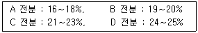

식품산업기사(구) (2003-05-25 기출문제)
1과목: 식품위생학
1. 식품 용기 및 포장재료에서 식품으로 이행되어 위생적 문제를 야기시킬 수 있는 물질이 바르게 연결된 것은?
- 금속용기 - PCB
- 인쇄된 포장지 - 톨루엔(toluene)
- 사일로 내부의 페인트 - 염화비닐
- PVC병 - 중금속
(정답률: 알수없음)

2. 병원성 대장균의 특성이 아닌 것은?
- 주증상은 급성 위장염이다.
- 주로 분변에서 오염된다.
- 그램음성, 아포형성 간균
- 젖당을 분해, 산과 가스(gas)를 생성
(정답률: 알수없음)
3. 복어독(tetrodotoxin)의 성질을 옳게 나타낸 것은?
- 62℃, 4분의 가열로 무독화된다.
- 100℃, 30분간의 가열로 파괴된다.
- 물에 녹기 쉽다.
- 알칼리성에서 불활성화되기 쉽다.
(정답률: 알수없음)
4. 유기수은에 의하여 유래되는 병은?
- 이타이이타이병
- 미나마타병
- 간질병
- 당뇨병
(정답률: 알수없음)
5. 식품공장에서 미생물 오염의 원인과 그에 대한 대책을 연결한 것 중 잘못된 것은?
- 작업자의 손 - 자외선등
- 공중낙하균 - 오존발생장치
- 장화 - 약제살균
- 작업대 - 약제살균
(정답률: 알수없음)
6. 인축공통 전염병이 아닌 것은?
- 파상열(Brucellosis)
- 탄저(Anthrax)
- 야토병(Tularemia)
- 콜레라(Cholera)
(정답률: 알수없음)
7. 금속제 기구와 용기에서 유래되는 식품 오염물질과 거리가 먼 것은?
- 납
- 카드뮴
- 주석
- 포르말린
(정답률: 알수없음)
8. 안식향산(benzoic acid) 사용의 가장 주된 목적은?
- 식품의 산미를 내기 위하여
- 식품의 부패를 방지하기 위하여
- 식품의 영양가치를 높이기 위하여
- 유지의 산화를 방지하기 위하여
(정답률: 알수없음)
9. 해수에 존재하는 호염성의 식중독 원인세균은?
- 포도상구균
- 웰치균
- 장염비브리오균
- 살모넬라균
(정답률: 알수없음)
10. 대장균군 검사시 식품의 종류에 따른 배지의 선택이 가장 적당한 것은?
- 유산균음료 - desoxycholate 한천배지
- 청량 음료수 - 표준한천평판 배지
- 생식용 냉동굴 - Nutrient agar 배지
- 식육제품 - MRS 배지
(정답률: 알수없음)
11. 다음 중 일반적으로 대기오염의 지표로 보는 것은?
- O2
- CO2
- N2
- SO2
(정답률: 알수없음)
12. 방사능 오염에 대한 설명이 잘못된 것은?
- 핵분열 생성물의 일부가 직접 또는 간접적으로 농작물에 이행될 수 있다.
- 생성율이 비교적 크고 반감기가 긴 90Sr과 137Cs 이 식품에서 문제가 된다.
- 방사능 오염 물질이 농작물에 축적되는 비율은 지역별 생육 토양의 성질에 영향을 받지 않는다.
- 131Ⅰ는 반감기가 짧으나 비교적 양이 많아서 문제가 된다.
(정답률: 알수없음)
13. 급성독성은 비교적 강하지 않으나 화학적으로 안정하여 잘 분해되지 않는 농약류는?
- 비소제
- 유기인제
- 유기염소제
- 유기수은제
(정답률: 알수없음)
14. 식품에 함유된 독성물질의 독성을 나타내는 것은?
- Aw
- DO
- LD50
- BOD
(정답률: 알수없음)
15. 화학합성품의 심사에서 가장 중점을 두는 사항은
- 함량
- 효력
- 안전성
- 영양가
(정답률: 알수없음)
16. 유해성 감미료와 거리가 먼 것은?
- calcium cyclamate
- dulcin
- D - sorbitol
- p - nitro - o - toluidine
(정답률: 알수없음)
17. 경구전염병 중 바이러스(virus)에 의한 것은?
- 폴리오
- 장티푸스
- 콜레라
- 이질
(정답률: 알수없음)
18. 쇠고기를 생식(生食)할 때 감염될 수 있는 기생충은?
- 구충
- 긴털가루진드기
- 유구조충
- 무구조충
(정답률: 알수없음)
19. 살모넬라 식중독에 대한 설명 중 가장 잘못된 것은?
- 원인식품은 식육, 달걀, 어육류 및 그 가공품이다.
- 60℃에서 30분간 가열하여도 사멸하지 않는다.
- 급성위장염 증상을 나타낸다.
- 원인균은 잠복기가 12∼24시간으로 발열이 심하다.
(정답률: 알수없음)
20. 법랑제 식기와 도자기, 옹기류 등에서 용출 가능한 중금속은?
- 납(Pb)
- PCB
- 안티몬(Sb)
- 비소(As)
(정답률: 알수없음)
2과목: 식품화학
21. 분말한천 등과 같이 젤(gel)이 건조상태가 된 것을 무엇이라 하는가?
- 젤리(jelly)
- 크세로젤(xerogel)
- 졸(sol)
- 결정(crystal)
(정답률: 알수없음)
22. 다음 중 필수 지방산이 아닌 것은
- 팔미트산(palmitic acid)
- 리놀레산(linoleic acid)
- 리놀렌산(linolenic acid)
- 아라키돈산(arachidonic acid)
(정답률: 알수없음)
23. 다음의 쓴맛을 나타내는 물질 중 배당체의 구조를 가지는 것은 어느 것인가?
- 카페인(Caffeine)
- 테오브로민(Theobromine)
- 쿠쿠르비타신(Cucurbitacin)
- 휴물론(Humulone)
(정답률: 알수없음)
24. 식품성분표에 의하면 우유의 조성은 탄수화물 4.9%, 단백질 4.3%, 지방 4.1%이다. 우유 100g의 유효열량은 얼마인가? (단, 탄수화물, 단백질:4kcal/g, 지방:9kcal/g)
- 68.5 kcal
- 71.2 kcal
- 73.7 kcal
- 75.8 kcal
(정답률: 알수없음)
25. 밥을 지을 때는 100℃에서 20분 정도 걸리며 쉽게 호화되나 빵을 구울 때는 약 230℃의 고온이 필요한 이유는?
- 아밀라아제(amylase)가 고열에 파괴되기 때문에
- 밀가루 반죽중의 수분이 적기 때문에
- 밀가루 전분의 호화속도가 늦기 때문에
- 빵에는 당류가 섞여 있기 때문에
(정답률: 알수없음)
26. 가공식품에 사용되는 소르비톨(sorbitol)의 기능이 아닌 것은?
- 저 칼로리 감미료
- 계면활성제
- 비타민 C 합성시 전구물질
- 착색제
(정답률: 알수없음)
27. 칼슘함량이 가장 많은 식품들로 짝지워진 것은?
- 백미와 쇠고기
- 멸치와 김
- 밀가루와 달걀
- 우유와 콩
(정답률: 알수없음)
28. 딸기, 가지, 포도, 사과 등에 주로 포함된 수용성 색소로 화청소라 부르기도 하는 것은?
- Carotenoid계 색소
- Anthocyanin계 색소
- Flavonoid계 색소
- Chlorophyll계 색소
(정답률: 알수없음)
29. 누른 밥에서 유도된 숭늉 향기의 주성분은 무엇인가?
- furfural류
- pyrazine류
- mercaptane류
- ketone류
(정답률: 알수없음)
30. 식품의 가열가공에 의해 생성되는 강력한 변이원과 발암물질로 알려진 것은?
- 멜라노이딘(melanoidine)
- 벤조피렌(benzopyrene)
- 리시노알라닌(lysinoalanine)
- 니트로사민(nitrosoamine)
(정답률: 알수없음)
31. 글리코겐(glycogen)이 가장 많이 함유된 것은?
- 동물의 혈액
- 동물의 간
- 콩
- 동물의 근육
(정답률: 알수없음)
32. 산패가 가장 빨리 일어나는 것은?
- 라우르산(lauric acid)
- 스테아르산(stearic acid)
- 리놀레산(linoleic acid)
- 팔미트산(palmitic acid)
(정답률: 알수없음)
33. 다음은 4가지 전분의 아밀로오스(amylose) 함량이다. 노화가 가장 쉽게 발생되는 전분은 어느 것인가?

- A
- B
- C
- D
(정답률: 알수없음)
34. 햄(heme)계 색소에 들어있는 금속은 무엇인가?
- 칼슘(Ca)
- 마그네슘(Mg)
- 철(Fe)
- 구리(Cu)
(정답률: 알수없음)
35. β -lactose의 화학구조상의 결합으로 옳은 것은?
- β -galactose 와 β - glucose의 결합
- β -galactose 와 fructose 결합
- β -glucose 와 β - glucose의 결합
- β -galactose 와 β - galactose의 결합
(정답률: 알수없음)
36. 식품가공 중 교질(Colloid) 용액에서 교질을 침전시키고자 한다. 적당한 방법이 아닌 것은?
- 반대 전하를 지니는 교질 입자를 첨가한다.
- 교질용액의 pH를 교질의 등전점으로 조절한다.
- 많은 양의 중성염을 첨가한다.
- 보호교질을 첨가한다.
(정답률: 알수없음)
37. 다음 덱스트린(dextrin) 중 요오드(iodine)와의 정색반응이 적갈색인 것은?
- amylodextrin
- achromodextrin
- erythrodextrin
- maltodextrin
(정답률: 알수없음)
38. 선도가 저하된 바닷고기의 특유한 비린 냄새의 본체는 무엇인가?
- 피페리딘(piperidine)
- 트리메틸아민(trimethylamine)
- 메틸머캡탄(methyl mercaptane)
- 스카톨(skatole)
(정답률: 알수없음)
39. 효소적 갈변을 방지하는 방법이 아닌 것은?
- 블렌칭(blanching)
- 아스코르빈산(ascorbic acid) 첨가
- NaCl 첨가
- 구리염의 첨가
(정답률: 알수없음)
40. 가당연유 속에 젓가락을 세워서 회전시켰을 때 연유가 젓가락을 따라 올라가는 현상은?
- 점조성(consistency)
- 예사성(spinability)
- 바이센베르그(Weissenberg) 효과
- 신전성(extensibility)
(정답률: 알수없음)
3과목: 식품가공학
41. 식품포장용 재료의 조건으로 가장 적합하지 않은 것은?
- 수분 이동의 제어
- 독성 성분이 존재하지 않을 것
- 제한된 사용온도 범위
- 환경친화적 재료
(정답률: 알수없음)
42. 산분해 간장 제조용 원료와 거리가 먼 것은?
- 탈지 대두
- 염산
- 수산화나트륨
- 코오지
(정답률: 30%)
43. 다음 유지채취방법 중 부적당한 것은?
- 융출(용출)법
- 증발법
- 압착법
- 추출법
(정답률: 알수없음)
44. 수증기의 열전달매체로서 특징이 아닌 것은?
- 잠열이 크다.
- 열전도율이 크다.
- 증기압이 높다.
- 임계점이 높다.
(정답률: 알수없음)
45. 과일을 건조할 때 황훈증을 하는 목적이 아닌 것은?
- 방부효과
- 효소파괴
- 맛의 증진
- 건조촉진
(정답률: 알수없음)
46. 버터의 일반적인 제조 공정이 바르게 된 것은?
- 원료유 → 크림 분리 → 크림 중화 → 크림 살균 →크림 숙성 → 교동 → 연압
- 원료유 → 크림 분리 → 크림 살균 → 크림 중화 →크림 숙성 → 연압 → 교동
- 원료유 → 크림 분리 → 크림 살균 → 연압 → 크림 중화 → 크림 숙성 → 교동
- 원료유 → 크림 분리 → 크림 중화 → 크림 살균 →연압 → 교동 → 크림 숙성
(정답률: 알수없음)
47. 빵의 제조에 있어 소금의 역할이 아닌 것은?
- 빵의 풍미를 좋게 한다.
- 밀가루 글루텐의 탄력을 증대시킨다.
- 효모의 발육을 자극시킨다.
- 생면(生麵)의 젖산 발효를 증대시킨다.
(정답률: 알수없음)
48. 고구마 전분 제조시 석회 처리 효과가 아닌 것은?
- 수율 증대
- 품질 향상
- 부패 방지
- 이물질 제거
(정답률: 알수없음)
49. 레토르트 파우치(Retort pouch)의 적성으로 틀린 것은?
- 고온에 견딜 수 있어야 한다.
- 파열강도가 낮아야 한다.
- 접착성이 좋아야 한다.
- 가스 투과성이 낮아야 한다.
(정답률: 알수없음)
50. 과실 착즙과 관련된 착즙기가 아닌 것은?
- 균질기(Homogenizer)
- 초퍼(Chopper)
- 펄퍼(Pulper)
- 피니시어(Finisher)
(정답률: 알수없음)
51. 제빵공정에서 처음에 밀가루를 체로 치는 가장 큰 이유는?
- 불순물을 제거하기 위하여
- 해충을 제거하기 위하여
- 산소를 풍부하게 함유시키기 위하여
- 가스를 제거하기 위하여
(정답률: 알수없음)
52. 두부제조에 사용되는 응고제로 사용하는 물질이 아닌것은?
- 글루코노델타락톤
- 탄산칼슘
- 염화칼슘
- 황산칼슘
(정답률: 알수없음)
53. 식물성 유지가 동물성 유지보다 산패가 잘 일어나지 않는 이유는?
- 불포화도가 낮기 때문에
- 열에 안정하기 때문에
- 천연 항산화제가 들어 있기 때문에
- 산화방지 보조물질(synergist)이 들어 있기 때문에
(정답률: 알수없음)
54. 시유의 품질평가 항목이 아닌 것은?
- 유지방
- 비중
- 무지고형분
- 젖산균수
(정답률: 알수없음)
55. 다음 통조림 식품의 살균시 살균온도가 가장 낮은 것은?
- 양송이
- 죽순
- 밀감
- 밤
(정답률: 알수없음)
56. 동물 사후강직 단계에서 일어나는 근수축 결과로 생긴 단백질은?
- 미오신(myosin)
- 트로포미오신(tropomyosin)
- 액토미오신(actomyosin)
- 트로포닌(troponin)
(정답률: 알수없음)
57. 사일런트 커터(Silent cutter)의 용도를 가장 잘 설명한 것은?
- 케이싱(casing) 하는데 쓰이는 기계
- 육을 둥글게 자르는 기계
- 육을 곱게 잘라서 결착력을 높이는 기계
- 쥬스 제조에 사용되는 기계
(정답률: 알수없음)
58. 육류의 연화제와 가장 거리가 먼 것은?
- 파파인(papain)
- 피신(ficin)
- 브로멜린(bromelin)
- 리파아제(lipase)
(정답률: 82%)
59. 아이스크림을 제조할 때 가장 알맞은 오버런(overrun)의 범위는 얼마인가?
- 30 ± 5%
- 50 ± 10%
- 70 ± 5%
- 90 ± 10%
(정답률: 알수없음)
60. 통조림 저장 중 발생하는 팽창(swell)의 원인으로 가장 거리가 먼 것은?
- 살균부족
- 살균 후 냉각부족
- 권체불량
- 충진과다
(정답률: 알수없음)
4과목: 식품미생물학
61. 청국장 제조에 사용하는 미생물은?
- Aspergillus oryzae
- Lactobacillus brevis
- Acetobacter aceti
- Bacillus subtilis
(정답률: 알수없음)
62. Pseudomonas 속의 특징이 아닌 것은?
- 저온에서 혐기적으로 저장되는 식품의 부패에 주로 관여한다.
- 단백질, 유지 가수분해력이 강한 종이 많다.
- 탄화수소, 방향족 화합물을 분해시키는 종이 많다.
- 수용성의 형광색소를 생성하는 종도 있다.
(정답률: 알수없음)
63. 고정화 효소의 제법으로 부적당한 것은?
- 담체 결합법
- 가교법
- 포괄법
- 회분법
(정답률: 알수없음)
64. 세균의 형태를 바르게 나타내지 못한 것은?
- Staphylococcus - 포도상구균
- Pediococcus - 4련구균
- E.coli - 연쇄상구균
- Bacillus - 간균
(정답률: 알수없음)
65. 젖산균에 관한 사항 중 틀린 것은?
- 요구르트 제조에는 hetero - type의 젖산균이 주로 이용된다.
- Catalase 음성의 미호기성균이다.
- 김치, 침채류의 발효에 관여한다.
- 장내에서 유해균의 증식을 억제한다.
(정답률: 알수없음)
66. 당류로부터 알콜을 발효 생산하기 위하여 이용되는 미생물은?
- 곰팡이
- 효모
- 세균
- 박테리오파아지
(정답률: 알수없음)
67. 곰팡이의 형태에 대한 설명으로 잘못된 것은?
- 담자포자 - 담자기의 끝에 보통 8개의 담자포자가 형성된다.
- 분생포자 - 분생자병 끝에 형성된다.
- 균총 - 균사체와 자실체를 합친 것을 뜻한다.
- 기중 균사 - 배지의 내부나 표면에서 생육하며 영양분을 흡수하는 균사이다.
(정답률: 알수없음)
68. 그램음성 세균의 세포벽에 대하여 바르게 설명한 것은?
- 주성분은 펩티도글리칸(peptidoglycan)이다.
- 스테롤(sterol)을 함유하고 있다.
- 세포벽의 외막은 인지질외에 lipopolysaccharide(LPS)와 단백질로 구성된다.
- 항생물질인 페니실린(penicillin)은 그램음성균에서 뚜렷한 효과를 나타낸다.
(정답률: 알수없음)
69. 청주의 제법으로 맞는 것은?
- 단 발효주
- 단행복 발효주
- 병행복 발효주
- 증류주
(정답률: 82%)
70. 효모의 증식과 관계가 없는 것은?
- 출아법
- 자낭포자 형성
- 분열법
- 분생포자 형성
(정답률: 알수없음)
71. 맥아즙 제조의 주 목적으로 가장 알맞은 것은?
- 효모의 증식
- 효소의 생산
- 발효
- 당화
(정답률: 알수없음)
72. 핵산관련 물질이 정미성을 나타내는 화학구조의 설명으로 부적당한 것은?
- Ribose의 5'- 위치에 인산기가 존재해야 한다.
- Nucleotide의 당은 Ribose만이고 Deoxyribose는 관계 없다.
- Purine환은 6 위치에 OH 기가 있어야 한다.
- 염기는 pyrimidine 계의 것에는 정미성을 가지고 있지 않다.
(정답률: 알수없음)
73. 맥주효모, 빵효모 등으로 이용되는 Saccharomyces cerevisiae 형태로 가장 알맞은 것은?
- 난형
- 구형
- 타원형
- 위균사형
(정답률: 알수없음)
74. 초덧에 균막을 형성함으로써 식초 양조의 유해균으로 작용하는 세균은?
- Acetobacter vini acetati
- Acetobacter schiitzenbachii
- Acetobacter xylinum
- Acetobacter aceti
(정답률: 알수없음)
75. 전분의 비환원성 말단에서 포도당 단위로 끊어내는 당화형 효소는?
- α - amylase
- protease
- maltase
- glucoamylase
(정답률: 알수없음)
76. 조류(algae) 중 분류학상 그 위치가 다른 하나는?
- 녹조류
- 홍조류
- 규조류
- 남조류
(정답률: 알수없음)
77. 아밀라아제(amylase)를 생산하지 못하는 미생물은?
- Aspergillus oryzae
- Bacillus subtilis
- Rhizopus delemar
- Acetobacter aceti
(정답률: 알수없음)
78. 미생물의 분리 배양 중 혐기성 배양법이 아닌 것은?
- 산소흡수법
- 중층배양법
- 진공배양법
- 진탕배양법
(정답률: 55%)
79. 이담자균류에 속하는 버섯은?
- 송이버섯
- 느타리버섯
- 목이버섯
- 표고버섯
(정답률: 알수없음)
80. 식용효모로 사용되며, 어떤 것은 병원성을 나타내는 효모속은?
- Candida 속
- Hansenula 속
- Debaryomyces 속
- Rhodotorula 속
(정답률: 알수없음)